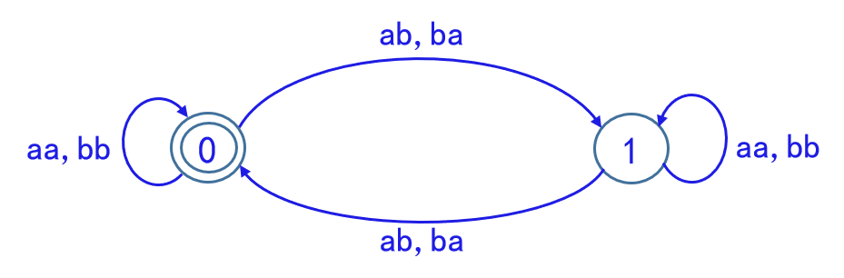
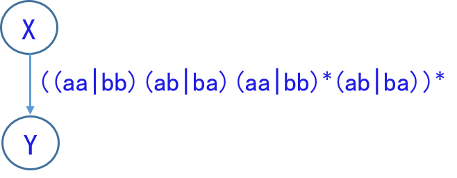

词法分析——转换算法¶
（本章较多图与文字来源于 XDZ 老师的 PPT，笔者负责整理）
本章介绍词法分析中几种表示的转换算法，通过构造来证明不同模型间的等价性（构造性证明）。不同的等价性命题与转换算法的对应关系如下：
| 等价性命题 | 转换算法 |
|---|---|
| 正规文法与 FA（NFA） 的等价性 | 可先证正规文法与正规式的等价性，或参考《编译原理》 |
| 正规式与 FA（NFA） 的等价性 | Thompson 算法 |
| NFA 与 DFA 的等价性 | 子集构造法 |
| DFA 化简（DFA 与简化 DFA 的等价性） | Hopcroft 算法 |
正规文法与 FA 的等价性¶
我们将讨论正规文法与有限自动机（FA）的等价性，你可能会疑惑为何不区分 DFA 和 NFA，这是因为我们随后会给出 NFA 和 DFA 的等价性证明，所以实际上最终归结为正规文法和 FA 等价。
命题表示：对于正规文法G 和有限自动机M，如果L(G) = L(M)，则称G和M是等价的。关于正规文法和有限自动机的等价性，有以下结论：
- 对每一个右线性正规文法G 或左线性正规文法G，都存在一个有限自动机（FA）M，使得L(M) = L(G)。
- 对每一个有限自动机 M，都存在一个右线性正规文法G_R和左线性文法G_L，使得L(M) = L(G_n) = L(G_L)。
证明 1：正规文法构造 FA¶
针对左/右线性文法分类讨论进行构造性证明
-
右线性正规文法
设右线性正规文法G=(V_N,V_T,S,P)。将V_N中的每一非终结符号视为状态符号，并增加一个新的终结状态符号f，f \notin V_N。
构造 FA，令M = (V_N \cup \{f\}, V_T, \delta,S,\{f\})，其中状态转换函数\delta由以下规则定义：
- （到终结状态的弧）若对某个A \in V_N 及 a \in V_T \cup\{ \epsilon \}，P 中有产生式 A \rightarrow a，则令\delta(A,a) = f
-
（到其他状态的弧）对任意的A \in V_N 及 a \in V_T \cup\{ \epsilon \}，设P中左端为A，右端第一符号位a的所有产生式为
A \rightarrow aA_1 | \cdots | aA_k则令\delta(A,a) = \{A_1,\cdots,A_k\}
显然，上述M是一个 NFA。
对于右线性文法G，在初始状态到字S \overset{+}{\Rightarrow} w的最左推导过程中，利用A \rightarrow aB一次，就相当于在M中从状态A经过标记为a的箭弧到达状态B。推导的最后（即文法箭头右边不含非终结符的情况）利用A \rightarrow a一次，则相当于在M中从状态A经过标记为a的箭弧到达中介状态f（包括a = \epsilon的情形）。
综上，根据我们的构造和解释，右线性正规文法G中，S \overset{+}{\Rightarrow} w的充要条件是：在M中，从状态S到状态f有一条通路，其上所有箭弧的标记符号依次连接起来恰好等于w。这就是说w \in L(G) \leftrightarrow w \in L(M)，故L(G) = L(M)。
-
左线性正规文法
设左线性正规文法G=(V_N,V_T,S,P)。将V_N中的每一非终结符号视为状态符号，并增加一个新的初始状态符号q，q \notin V_N。
与上述右线性正规文法构造性证明类似，我们同样构造一个 FA，不过这里注意自动机初态和终态集略有不同。令M = (V_N \cup \{q\}, V_T, \delta,q,\{S\})，其中状态转换函数\delta由以下规则定义：
- （起始状态出发的弧）若对某个A \in V_N 及 a \in V_T \cup\{ \epsilon \}，P 中有产生式 A \rightarrow a，则令\delta(q,a) = A
-
（其他状态出发的弧）对任意的A \in V_N 及 a \in V_T \cup\{ \epsilon \}，设P中所有右端第一符号位为A，第二符号位为a的所有产生式为：
A_1 \rightarrow A a , \cdots , A_k \rightarrow A a
则令\delta(A,a) = \{ A_1 , \cdots, A_k \}。
利用A \rightarrow a一次，相当于在M中从状态q经过标记为a的箭弧到达状态A，利用A_1 \rightarrow A a一次，则相当于在M中从状态A经过标记为a的弧到达状态A_1。与右线性的证明过程类似，不过随着文法推导，字是从末尾符号向初始符号构造，自动机上的弧也是从终结符号按着箭头到箭尾倒序构造。仍有w \in L(G) \leftrightarrow w \in L(M)，故 L(G) = L(M)$
我们构造的自动机M明显都是 NFA，转换为 DFA，这部分要用到后面章节NFA 与 DFA 等价性证明的内容。
证明 2：FA 构造正规文法¶
正规式与 FA（NFA） 的等价性¶
证明 1：FA 构造正规式¶
构造的核心思路是将状态转换图逐渐消解，最后转换为单一的正规式表达。
首先把转换图的概念拓广，令每条弧可用一个正规式作标记。为了解决非单一终态等问题，我们在状态机M的基础上构造M'，M转换图上加进两个结，一个为X结，另一个为Y结；
- 从X结用ε弧连接到M的所有初态结；
- 从 M 的所有终结用ε弧连接到 Y 结
显然，L(M)=L(M')，即，这两个 NFA 是等价的，且M'只有一个初态一个终态。
反复使用下图所示的替换规则，消去所有的结最后达到 X--正规式→Y。

问题
下图经消结后，对应的正规式是什么，识别的是什么语言

答案
正规式为((aa|bb)(ab|ba)(aa|bb)*(ab|ba))*，识别的是含偶数个a和偶数个b的字，消去过程如下：



证明 2：正规式构造 FA¶
证明分为两步：
- 构造\sum上的 NFA M'，使得L(M')=L(V)
- M'确定化
需说明的是，仅步骤 1 我们就已经构造性证明出正规式与 NFA 等价，若要证明和 DFA 等价，则需步骤 2 进行 NFA 确定化，这部分还是后面章节NFA 与 DFA 等价性证明的内容。
第一部分的构造其实很简单，就是FA 构造正规式 的逆过程。
首先把正规式 V 表示为拓广转换图（X--正规式→Y），然后通过对 V 进行分裂和加进新结的办法，逐步把这个图转变成：每条弧标记为 Σ 的一个字符或 ε。
使用下面的替换规则：

在整个分裂过程中，所有新结均用不同的名字，保留X和Y为全图唯一的初态结和终态结，至此，得到了一个 NFA M' 显然，L(M')=L(V)。如果需要进行
NFA 与 DFA 的等价性¶
待完成
DFA 化简¶
待完成
本页面最近更新： ，更新历史
发现错误？想一起完善？ 在 GitHub上编辑此页！
本页面贡献者：CSU CS Wiki
本页面的全部内容在 CC BY-SA 4.0 SATA 协议之条款下提供，附加条款亦可能应用